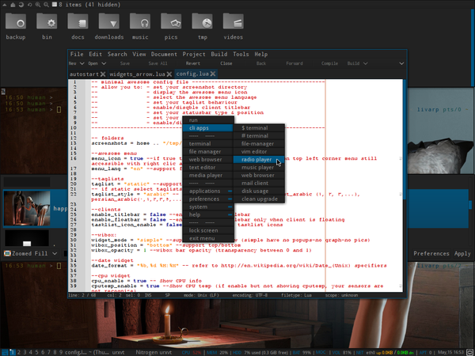
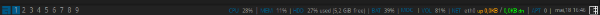

lang fr|gb

la session awesome
special feature: session configurée par Aphelion :)
Awesome est un gestionnaire de fenêtres utilisant le principe du tiling des différentes fenêtres sur l’écran. c'est-à-dire que chaque fenêtre utilise le maximum d’espace restant et ne se chevauchera pas avec une autre. Awesome est extrêmement configurable et ses fichiers de configuration sont écris avec le langage Lua. Awesome permet de choisir un mode de disposition des fenêtres sur chaque espace de travail et ce de façon dynamique. Awesome est basé sur le code de DWM. ses principales fonctionnalités:
- très stable, rapide et léger
- utilise la bibliothèque asynchrone XCB au lieu du vieux Xlib synchrone pour plus de rapidité
- support complet du multi-écran (XRandR, Xinerama ou Zaphod)
- implémente de nombreux standards Freedesktop : EWMH, XDG Base Directory, XEmbed, System Tray
- support de la vrai transparence (via l’extension Composite et xcompmgr)
- réarrangement dynamique et à la volée des différentes fenêtre. Les fenêtres Popup et fixes sont automatiquement flottantes
- disposition : gestion automatique du placement fenêtres selon la politique choisi pour chaque tag
- extensions en Lua
screenshots
{kind=link}
lancement
awesome est lancé par le script ~/bin/start/awesome_start.sh.
pour changer vos applications lancées au démarrage, éditer ce fichier:
composants
awesome a été enrichi de plusieurs librairies permettant l'affichage de certains widgets, le menu-client...
- vicious: crédits: Lucas de Vries, Adrian C. (anrxc).
- couth: librairie utilisée pour le widget moc/mpd. crédits: Bzed - http://awesome.naquadah.org/wiki/Calendar_widget & Marc Dequènes (Duck) - Duck@DuckCorp.org
- shifty: permet la gestion dynamique des tags. crédits: koniu gkusnierz@gmail.com & resixian (aka bioe007) resixian@gmail.com http://awesome.naquadah.org/wiki/index.php?title=Shifty
- toolbox: crédits: Perry Hargrave
- calendar2: affichage du calendrier en popup. crédits: Adrian C. anrxc.sysphere.org http://sam.zoy.org/wtfpl/COPYING
- client-menu: permet d'agir sur les clients depuis la barre de tache. crédits: Perry Hargrave
- teardrop: permet d'afficher des clients en popup: crédits: Adrian C. anrxc.sysphere.org
awesome dispose d'une barre de statut délivrant un maximum d'informations sur votre machine et son utilisation:
- la barre affiche: le menu, la liste des tags, le bouton de disposition (layout), la liste des clients ouverts sur le tag, la statusbar et la zone de notification.
- le mode simple
 - le mode arrow
{kind=link}
{kind=link}
configuration d'awesome
la configuration passe habituellement par l'édition de son fichier principal: ~/.config/awesome/rc.lua. mais sur livarp, Aphelion a divisé cette configuration et créé un fichier ~/.config/awesome/config.lua, entièrement commenté, et qui vous permet de configurer votre session sans rien comprendre au LUA (comme moi)... merci Aphelion :D
le fichier magique: config.lua:
ce ficher vous permet de configurer l'affichage de la barre de statut, ses composants, le langage du menu, la liste des tags, etc...
-- fichier minimal de configuration pour awesome ----------------------- -- vous permet de: - définir votre dossier de captures -- - afficher l'icone de menu -- - sélectionner la langue du menu -- - définir l'apparence de la liste de tags -- - définir la barre de titre -- - configurar la barre de statut (type & position) -- - définir le format de la date -- - activer/désactiver les widgets ------------------------------------------------------------------------ -- dossier des captures d'écrans screenshots = home .. "/tmp/" -- icones de menu awesome menu_icon = true -- si true, affiche l'icone de menu awesome à gauche de la barre, sinon, le menu reste accessible au clic-droit ou Alt+p menu_lang = "fr" -- supporte fr ou en -- taglists taglist = "static" -- supporte static/dynamic -- si static sélectionner taglists_type taglist_style = "arabic" -- supporte arabic (1,2,3...),east_arabic (١, ٢, ٣,...), persian_arabic(٠,١,٢,٣,۴,....}, roman (I, II, III, IV,) -- clients enable_titlebar = false -- affiche la barre de titre des clients enable_floatbar = false -- affiche la barre de titre des clients libres tasklist_icon_enable = false -- affiche l'icone dans la barre de titre -- barre de widgets widget_mode = "arrow" -- type de widgets, supporte simple/arrow wibox_position = "bottom" -- position e la barre, supporte top/bottom wibox_opacity = 1 -- opacité de la barre entre 0 et 1 -- widget date date_format = "%b,%d %H:%M" -- man date pour plus de détails -- widget cpu cpu_enable = true -- affiche l'utilisation cpu cputemp_enable = true -- affiche la température cpu -- widget mem mem_enable = true -- affiche l'utilisation mémoire -- widget disk diskroot_enable = true -- affiche l'utilisation de la partition / -- widget system uptime_enable = false -- affiche l'uptime et le load cpu -- widget réseau net_enable = true -- affiche le traffic réseau apt_enable = true -- affiche les mises à jour disponibles (dépend de apt-show-versions) gmail_enable = false -- affiche le nombre de mail non lus dans gmails (dépend de ~/.netrc indiquant -> machine mail.google.com login 'e-mail address' password 'password') weather_enable = false -- affiche les infos météo weather_code = "LFPO" -- code de région pour la météo -- widget volume vol_enable = true -- affiche le volume -- widget batterie battery_enable = true -- affiche l'état de la batterie -- widget musique moc_enable = true -- affiche les infos moc player cmus_enable = false -- affiche les infos cmus player --Aphelion&arpinux@2013-------------------------------------------------
raccourcis clavier/souris
les raccoucis sont configurés depuis le fichier ~/.config/awesome/config/keys.lua et prefferdapps.lua
la liste des raccourcis principaux est disponible au survol du bouton d'aide de la barre supérieure.
menus:
- menu awesome: icone de menu dans la barre inférieure, Alt+p ou clic-droit sur le bureau
- dmenu: Alt+F2
- prompt: Alt+r
- recherche internet: Alt+F3
control:
- relancer awesome: Ctrl+Alt+r
- quitter awesome: Ctrl+Alt+q ou depuis le menu awesome:exit
fenêtres:
- fermer le client: Alt+q
- client précédent: Alt+j
- client suivant: Alt+k
- dernier client: Alt+Tab
- échange avec le client précédent: Ctrl+Alt+j
- échange avec le client suivant: Ctrl+Alt+k
- libère/tile le client: Ctrl+Alt+Space
- déplacer la fenêtre: Alt+clic-gauche
- redimensionner la fenêtre: Alt+clic-droit
navigation:
- tag précédent/suivant: Alt+Gauche/Droite
- échange avec le tag précédent: Alt+Esc
- envoyer au tag précédent/suivant: Alt(+Shift)+n
- aller au tag 'urgent': Alt+u
- ajouter un tag: Alt+a
- renommer un tag: Alt+Shift+r
- supprimer un tag: Alt+Shift+d
disposition (layout)
- augmenter la surface du master: Alt+l
- diminuer la surface du master: Alt+h
- disposition suivante: Alt+Space
- disposition précédente: Alt+Shift+Space
lanceurs:
- lanceur de terminal par défaut: Alt+Enter
- lancer le prompt: Alt+r
- lancer ranger: Alt+f
- lancer rox-filer: Alt+Shift+f
- lancer firefox: Alt+w
- lancer weechat: Alt+i
- lecteur de musique: Alt+m